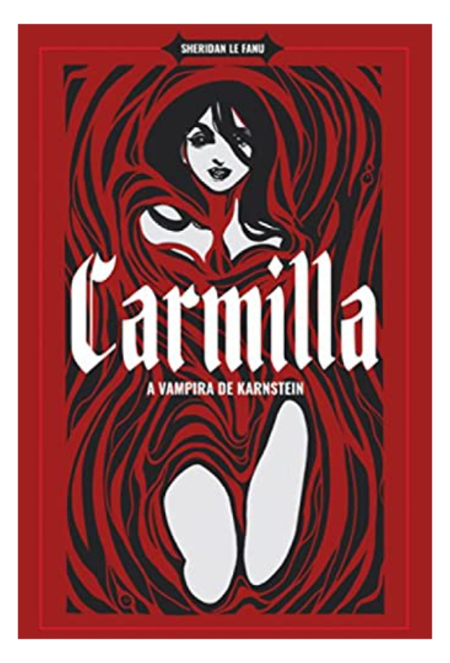

Carmilla - Sheridan Le Fanu
Sinopse
Essa edição traz a primeira vampira da história e também a primeira história de vampiro já escrita em projeto gráfico especial, com curiosidades sobre as obras e os autores. Carmilla é uma obra precursora da temática de vampiros, considerada por muitos críticos como a melhor do século XIX, pela maneira como trabalha o suspense e o erotismo. Foi a partir dela que Drácula, de Bram Stoker, recebeu suas principais características. A vampira de Karnstein se torna o motivo dos horrores e depois do desejo profundo de Laura, uma jovem que vive somente na companhia do pai em um castelo isolado no Leste Europeu. O Vampiro, de John William Polidori, concretizou as lendas folclóricas sobre vampiro e deu a ele a cara que tem ainda hoje: um demônio aristocrata que ataca entre a alta sociedade.